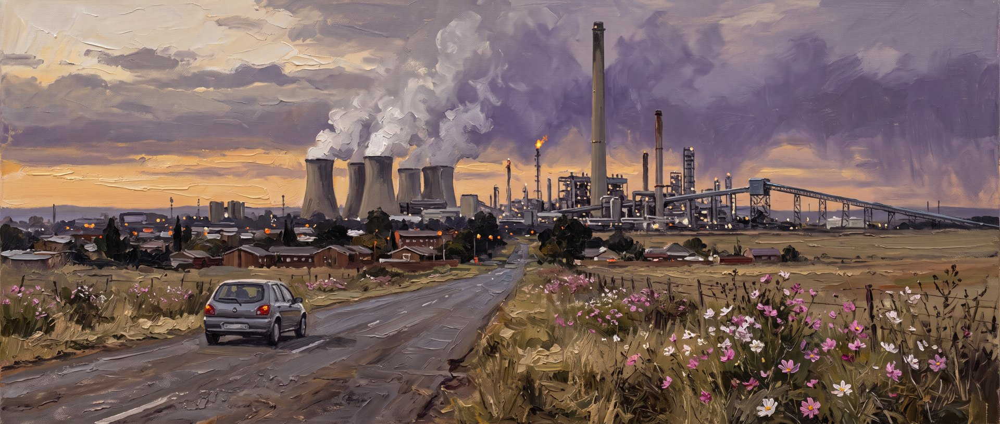
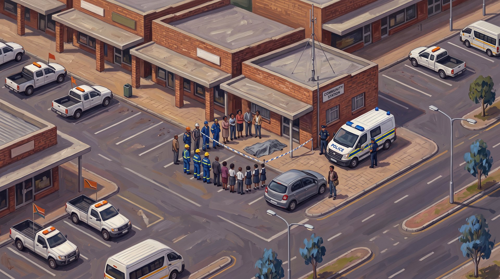
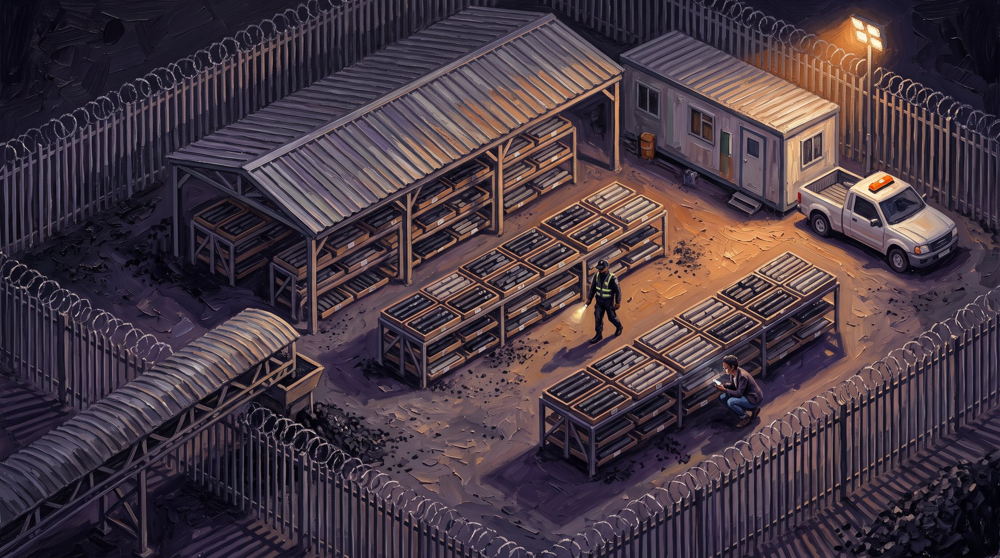
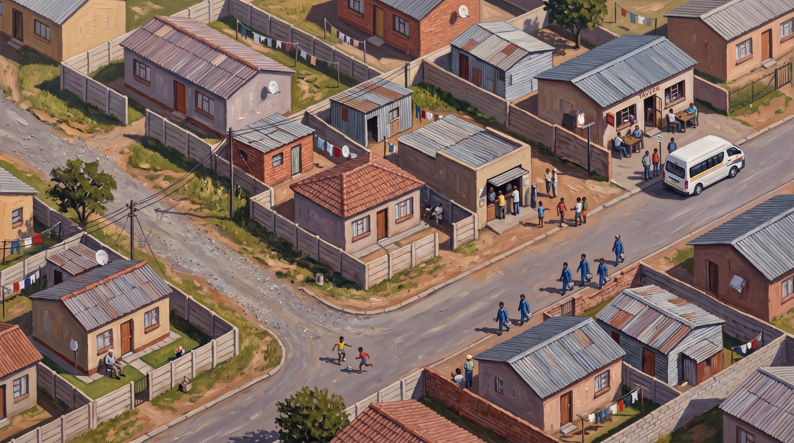
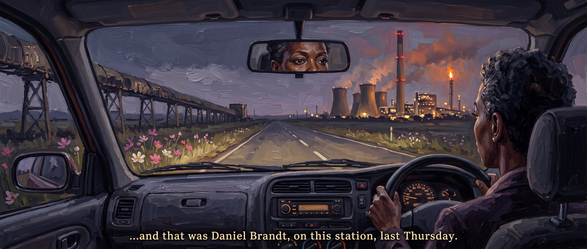
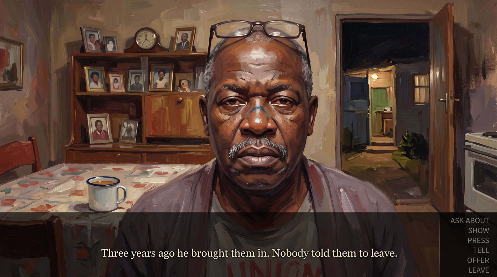
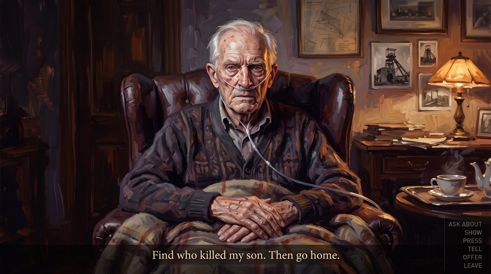
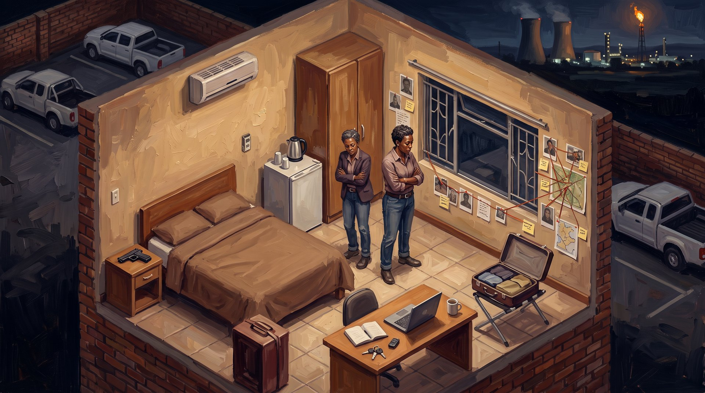

Art review 04 · oil painting · five days in Secunda
Secunda
Seven new frames that draw the real town: the plant on the skyline, the conveyors, face-brick and parking lots, eMbalenhle, cosmos on the verges. The people and the colliery are invented. Notes are under each frame and the questions are at the bottom.

Monday, dusk, driving in. Cooling towers, the tall stack, a flare, a conveyor coming in across the veld, cosmos along the fence.
The world in play
Three of the four areas
These are at the gameplay camera. The fourth area, the Brandt farm, is not drawn yet.

Town centre, MondayFace-brick shop row, concrete canopy, parking bays, white bakkies with beacons and flags. The crowd is in overalls and office clothes. Ruth matches her sheet. The light should be later and lower.

The colliery core shed, Thursday nightBlack coal core in the trays, a site office, palisade and razor wire, the conveyor cutting the corner. One light, one guard, Ruth behind the rack. This is how stealth should read.

eMbalenhle, afternoonAn ordinary street at the end of a shift: people walking home in overalls, a tavern, a spaza, a taxi, children in the road. Joseph's house would be one of these.
Driving
Between areas

The travel interlude. The plant gets closer, the conveyor runs beside the road, and the dead man's station is on the car radio. This is the frame I would build the game's mood around.
Conversations
Face to face

Joseph Sithole, at homeRedrawn as a specific man: glasses pushed up, the blue coal scar across his nose, family photographs behind him, the yard through the door.

Hendrik Brandt, the farmKept from the last set. The photographs behind him show a gold headgear and should become his own colliery.
Main character and home base
Ruth, and her room
Ruth MahlanguUsed as the reference for every new frame she is in. It held: she is recognisably the same woman in the town centre, the core shed and the car.

The guesthouse roomThe room is right: tiles, bar fridge, air conditioner, burglar bars, contractors' bakkies in the yard, the plant through the window. The image model painted Ruth twice.Redo with one Ruth
For review
What needs deciding
Is this Secunda?
You know it and I do not. Say what is wrong or missing: the plant's shape, the town centre, the houses, the vehicles, the light. If you can point me at photographs, the next pass can be painted from them.
Real place, invented story
The colliery, the security firm, the guesthouse, the station and all the people are fictional, and the plant is only ever the skyline. Confirm that line is where you want it.
Which places must be in?
The design uses the town centre, a fictional colliery, one eMbalenhle street and a farm. The lake, the mall, the casino, Evander's headgears or a specific suburb could replace or join them.
Next frames
Redo the guesthouse room. Then the Brandt farm, the four powers as portraits (Steyn, Mokoena, Grace Tau, Captain Khoza), the colliery lab with Anneline, tray 114, and Friday morning at the colliery gate.